Le foto
Toccate una foto per ingrandirla e sfogliarle tutte.
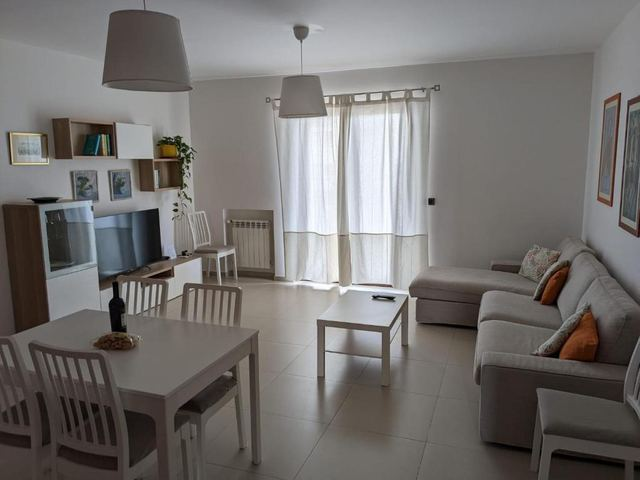
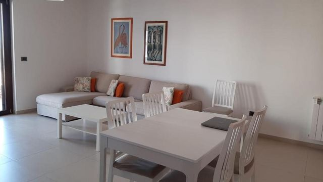
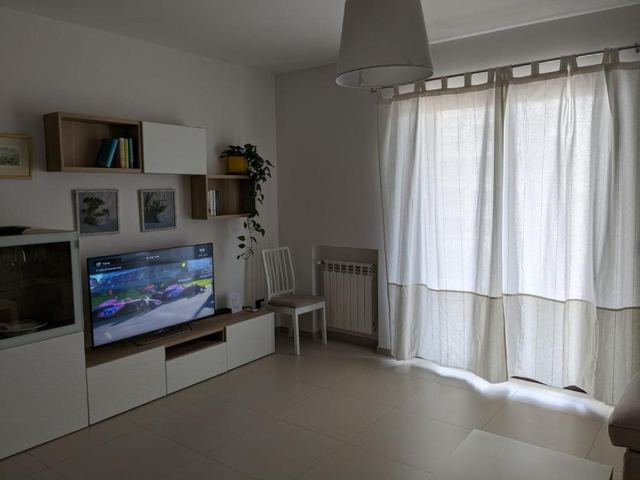
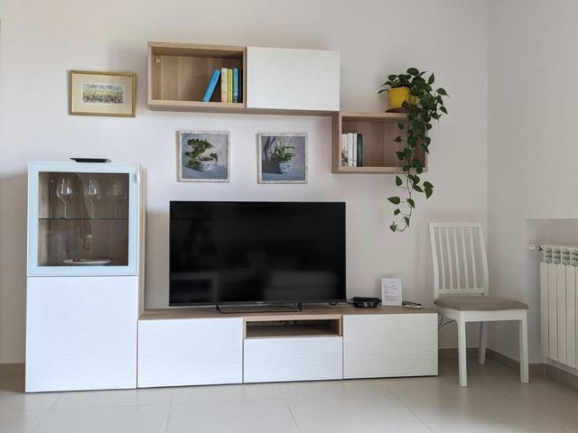
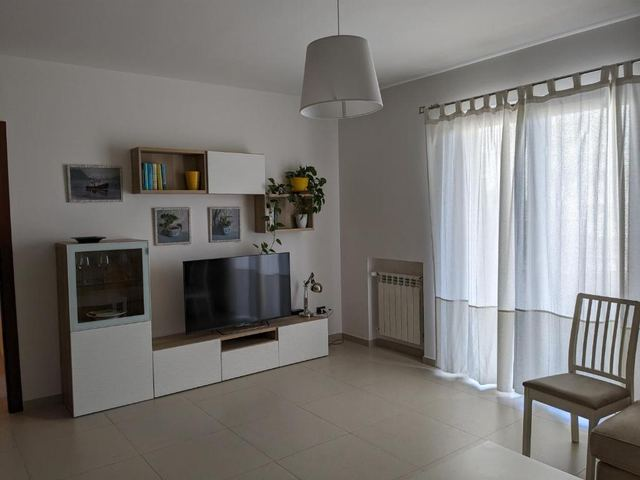
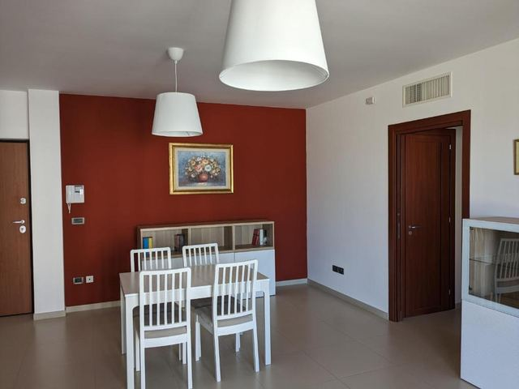
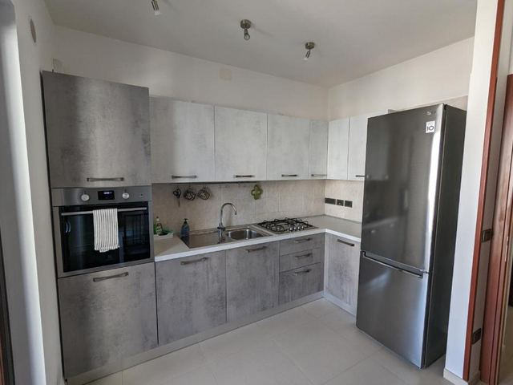
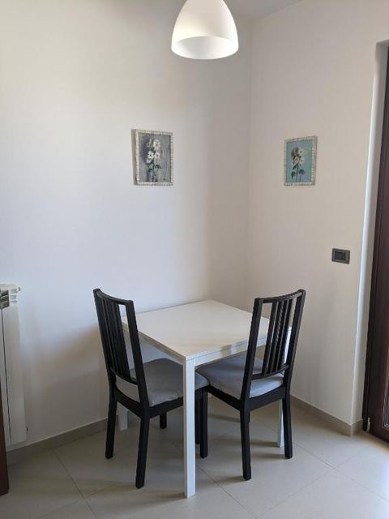
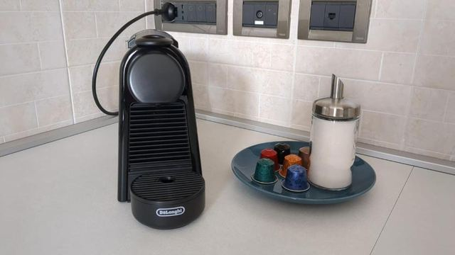
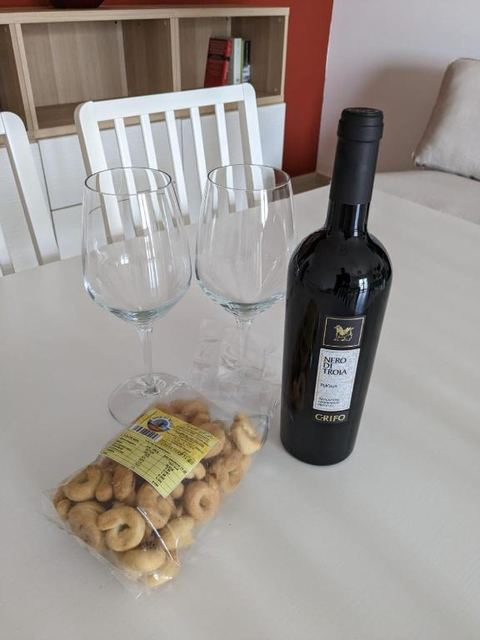
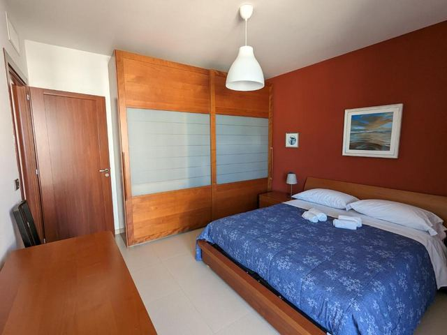
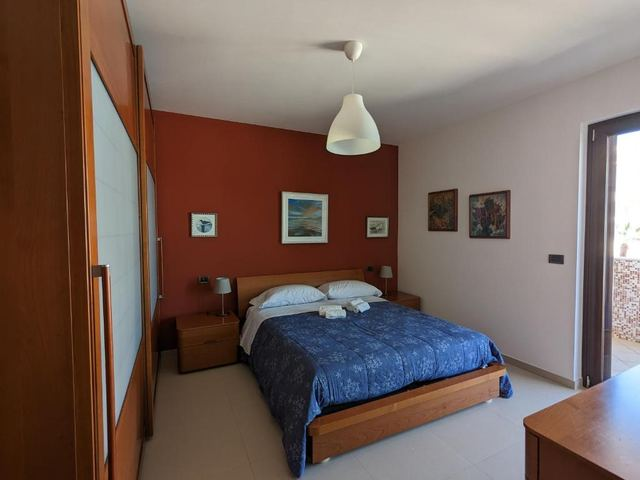
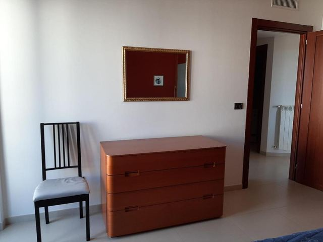
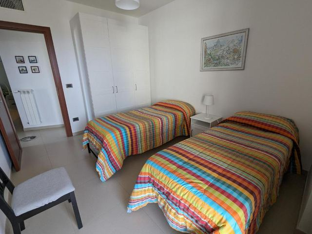
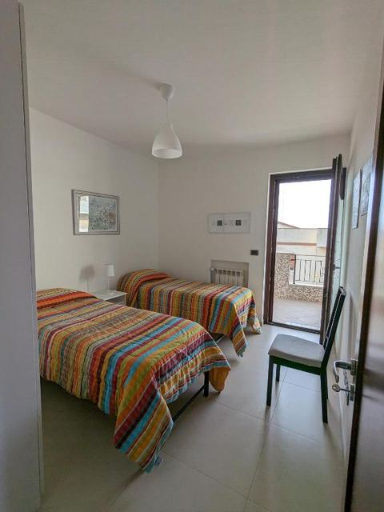
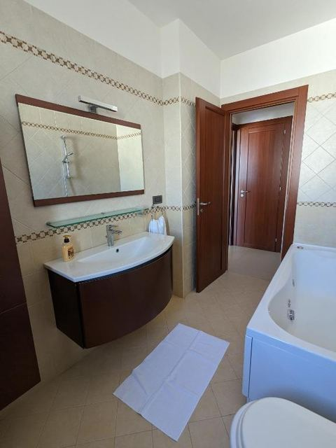
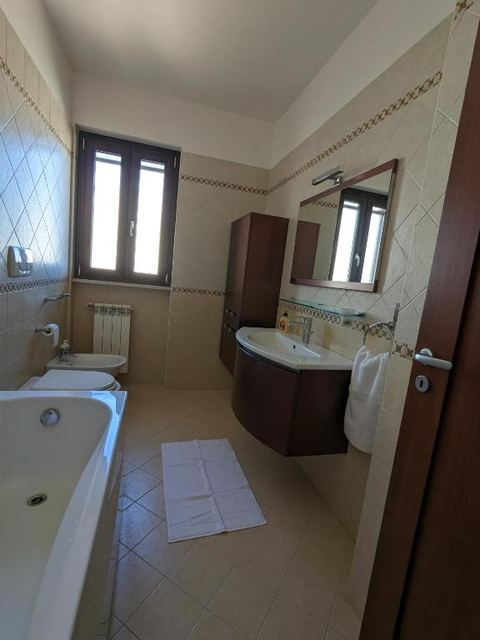
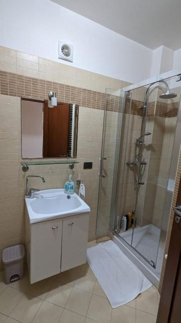
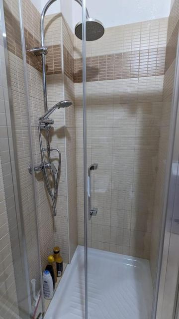
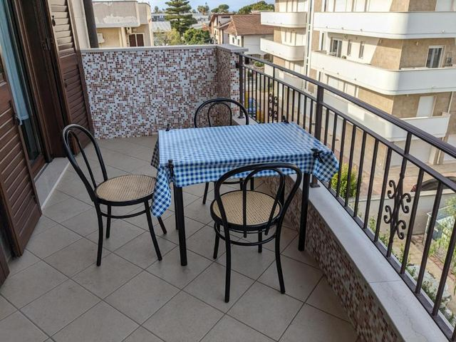
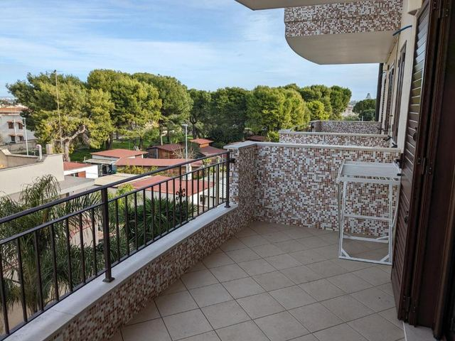
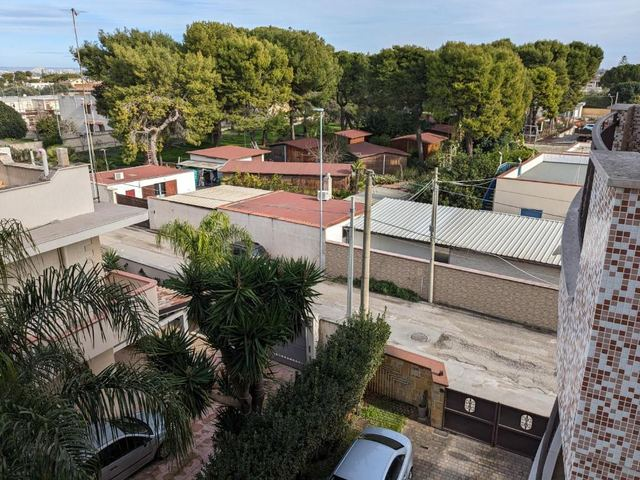
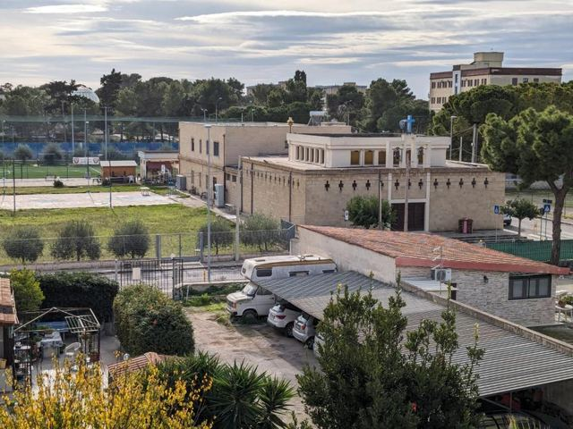
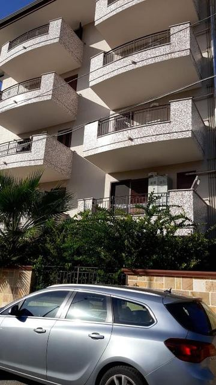
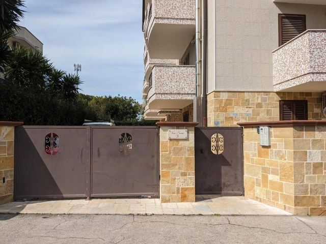
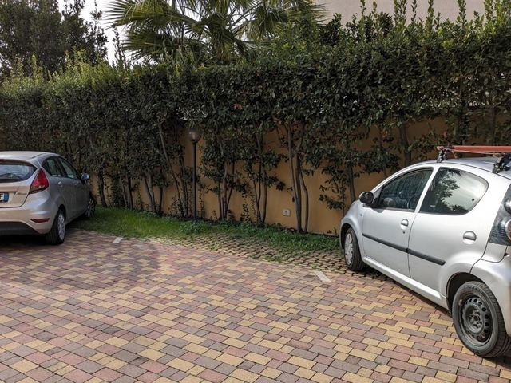
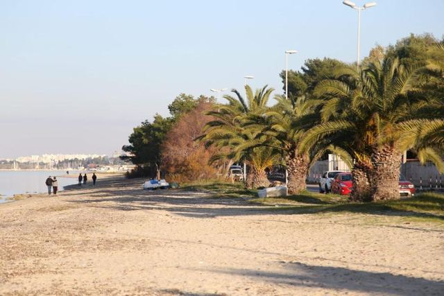
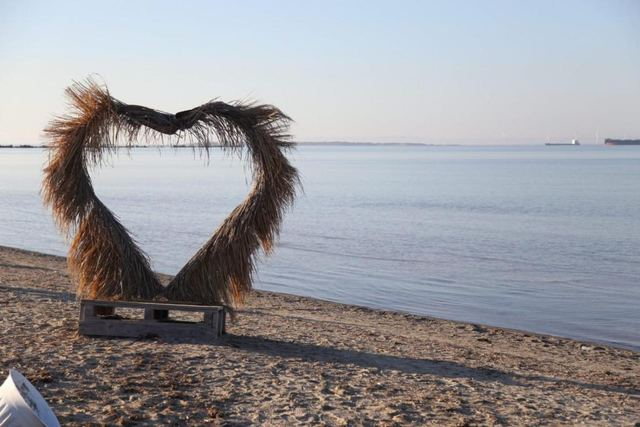


Benvenuti
Siamo Lucia e Marco e saremo felici di ospitarvi alla Casa dei Due Mari, un appartamento luminoso al terzo piano a San Vito, Taranto, vicino al mare e alle Scuole Sottufficiali della Marina Militare. Curiamo ogni piccolo dettaglio per rendere il vostro soggiorno il più piacevole possibile.
L'arrivo è semplice e in autonomia: dopo la prenotazione vi mandiamo tutte le istruzioni per entrare.
- Terzo piano con ascensore
- Camera matrimoniale e camera con due letti
- Due bagni, con vasca e con doccia
- Balcone con tavolo e vista sul verde
- Posto auto privato nel cortile
- Self check-in con codici
La zona
San Vito, tra il mare e le Scuole Sottufficiali della Marina Militare
La Casa dei Due Mari si trova a San Vito, il quartiere sul mare a sud del centro di Taranto, vicino a Mariscuola Taranto, sede delle Scuole CEMM della Marina Militare.
-
Mariscuola Taranto – Scuole CEMM
Siamo vicini alle Scuole Sottufficiali della Marina Militare: una soluzione comoda per allievi e militari in corso e per le famiglie che vengono per giuramenti, cerimonie e visite.
-
Il mare
Le spiagge e il lungomare di San Vito sono vicini: perfetti per un bagno d'estate o per una passeggiata al tramonto in ogni stagione.
-
Taranto, la città dei due mari
In pochi minuti d'auto siete in centro: la Città Vecchia, il Ponte Girevole tra Mar Grande e Mar Piccolo e il Museo Archeologico MArTA.
-
Comodo con l'auto
Il posto auto privato nel cortile recintato vi lascia liberi di girare la Puglia: spiagge, masserie e borghi sono a portata di gita.
Dove siamo
Via Suri 3, San Vito, Taranto
Vi aspettiamo
Per disponibilità e prenotazioni scriveteci su WhatsApp o chiamateci.